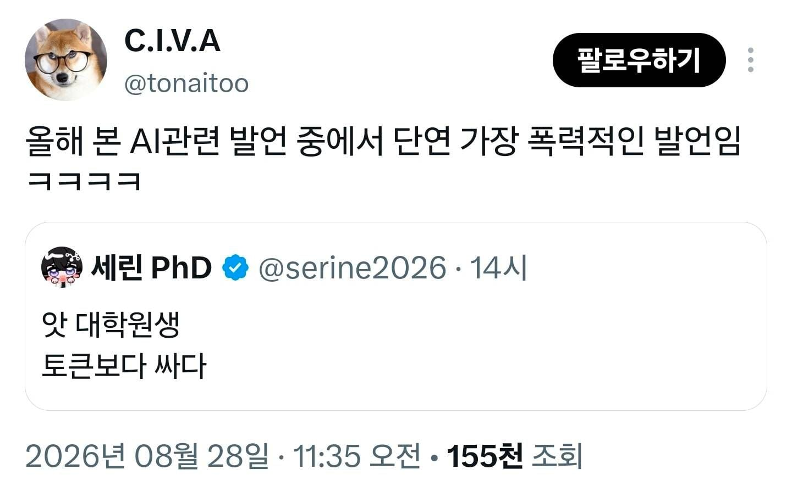

올해 본 ai 발언중 가장 폭력적임
댓글
전기를 먹지않는 무한동력 AI 로봇
심부름 청소 잡다한일 가능
탄수화물 먹는 aiㄷㄷ 심지어 팔다리 달려있음
빵도잘사옵니다
심지어 알아서 토큰 사서 ai쓰고 있음ㄷㄷㄷㄷ
ㅋㅋㅋㅋㅋ
이미 ai는 완성되어 있었구나ㄷㄷㄷ
무료 피지컬AI ㄷㄷㄷㄷㄷ
성능 최소 1000배는 차이날듯
교수 하네스로 동작하는 멀티모달 에이전트
교수가 바이브 코딩을 하면 대학원생은 집에 못갑니다
??? : 이케 이케좀 해볼수 없겠니?
만능 코드
이정도면 바이오코딩 아닌가..?
Fable 5 펑펑 태우면 토큰 기준 하루 30이더라 ㅋㅋ
클로드 사용량 시발이야
코딩은 Sonnet이나 Opus도 실수하는거 갈구면서 고치다보면 잘 나오는데
진짜 능지가 드러나는 글쓰기는 Fable이 줘패는 수준이라 안 쓸 수가 없더라
최근에 유료버전으로 클로드 입문했는데
fable 이색기는 아예 추가 구매가 필요한거 같더라고 그래서 아직 못써봄
좋다니까 써보고 싶긴하네
아랫 단계는 확률적 글싸개를 못 벗어나서
속도만 빠르고 다 알려줘도 매번 비슷한 실수해서 빠따쳐야 하는 신입이면
Fable은 오류가 적고 실수를 알려주면 알아서 규칙 추가하고 그걸 지키는 것도 잘함
아 말귀를 못 알아먹네라는 느낌이 거의 사라지고 AGI라고 할만한 수준에 근접했음
이 대학원생은 싸게 해줍니다
연구자라도 상대하고 있는 줄 알았나?
맞잖아..?
아 이번에 나온 26년 석사 1학년 생은 너무 할루시네이션이 많아 박사애들한테 좀 깎으라고 해야지
과제 참여율 100% 땡기면 아닐듯?
이 대학원생은 무료로 연구합니다.
교수는(은) 논문이(가) 필요해요
이런 교수들은 토큰이(가) 없어요.
그들은 순간의 대학원생으로 빠른 연구를(을) 원합니다.
대학원생 지원(하)기